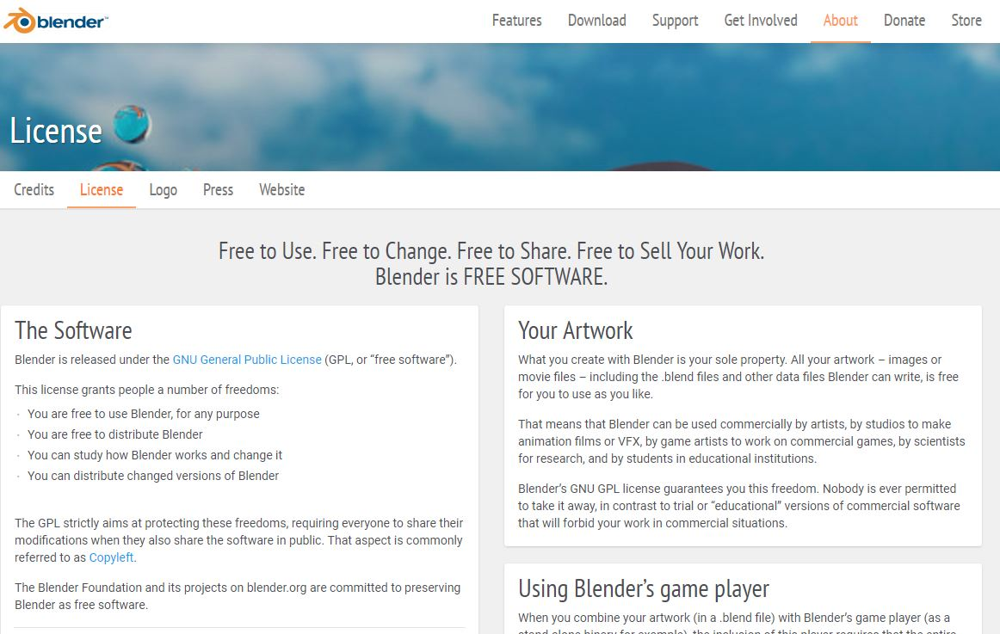
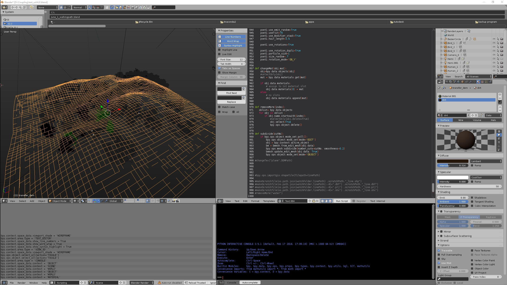
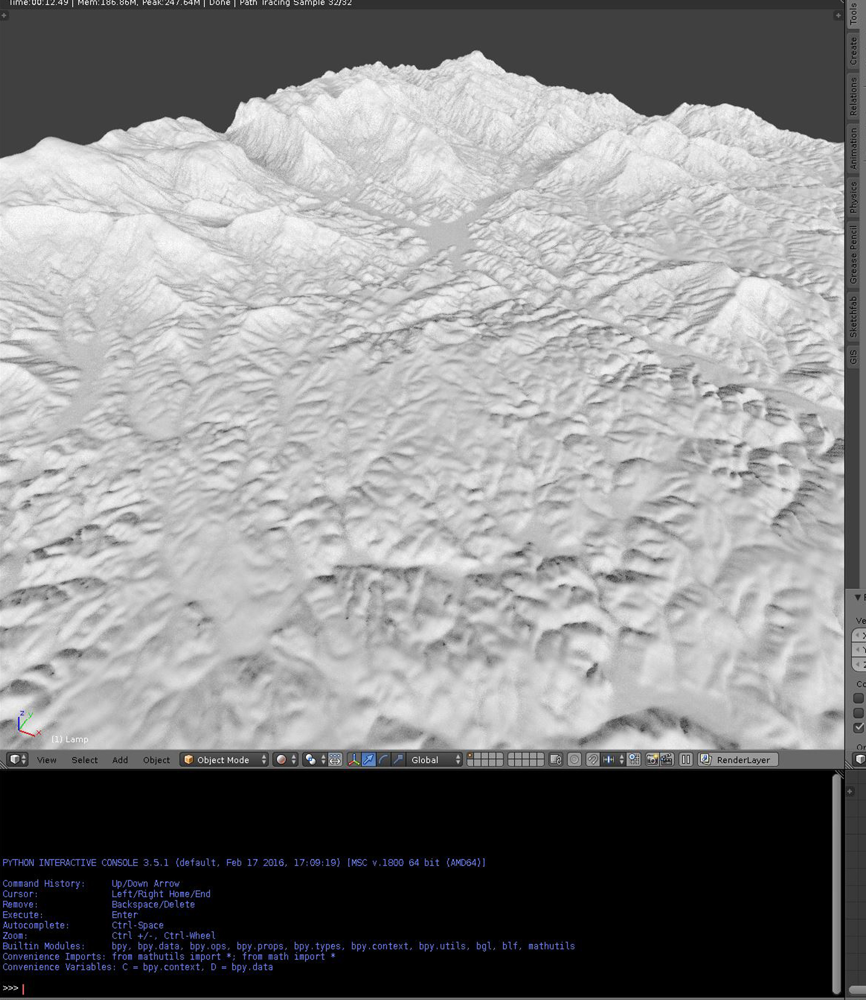
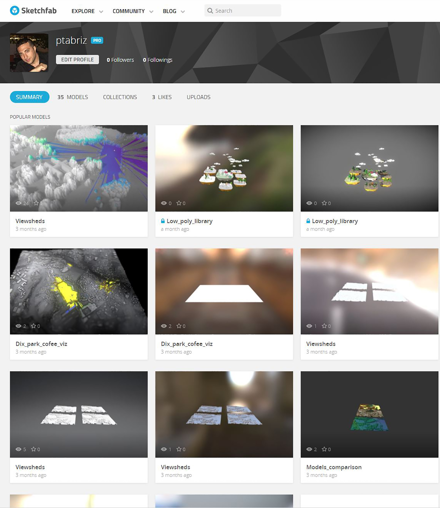
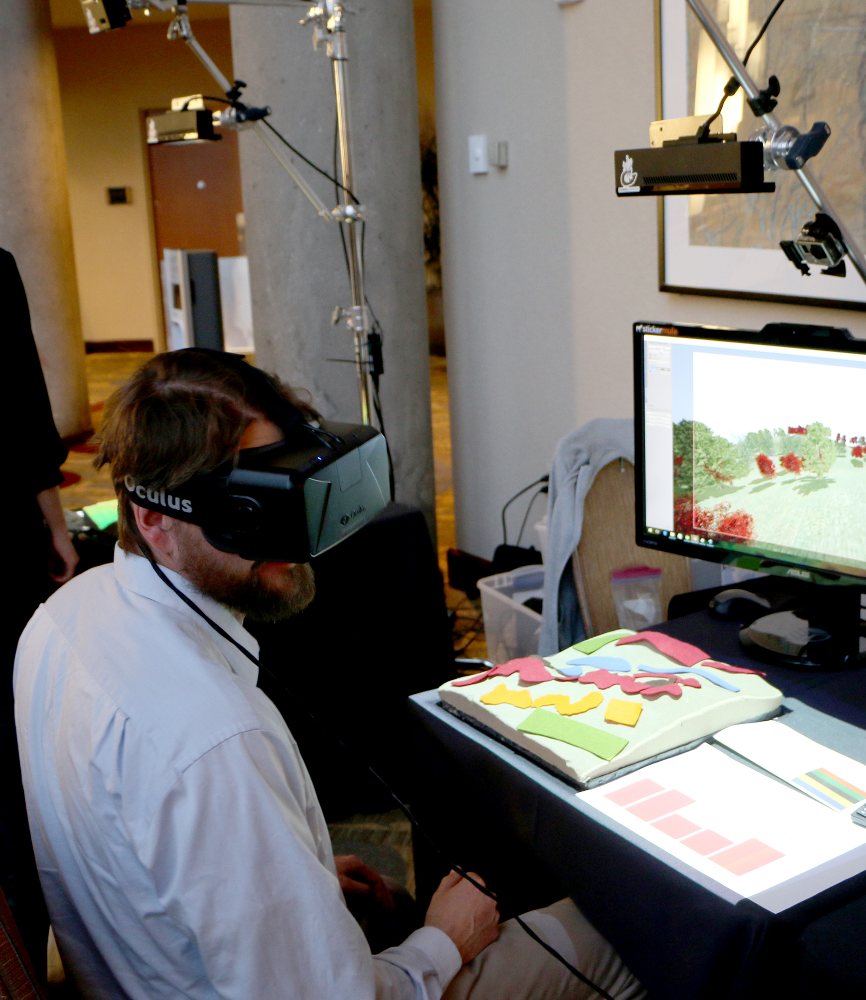
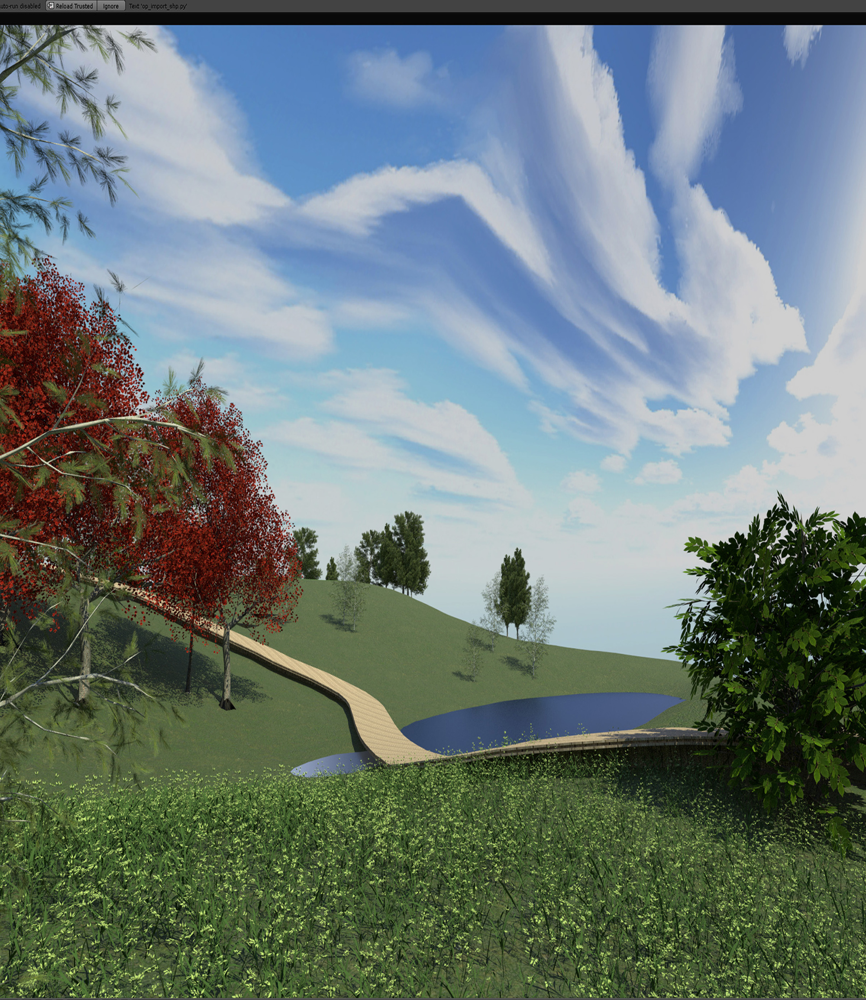
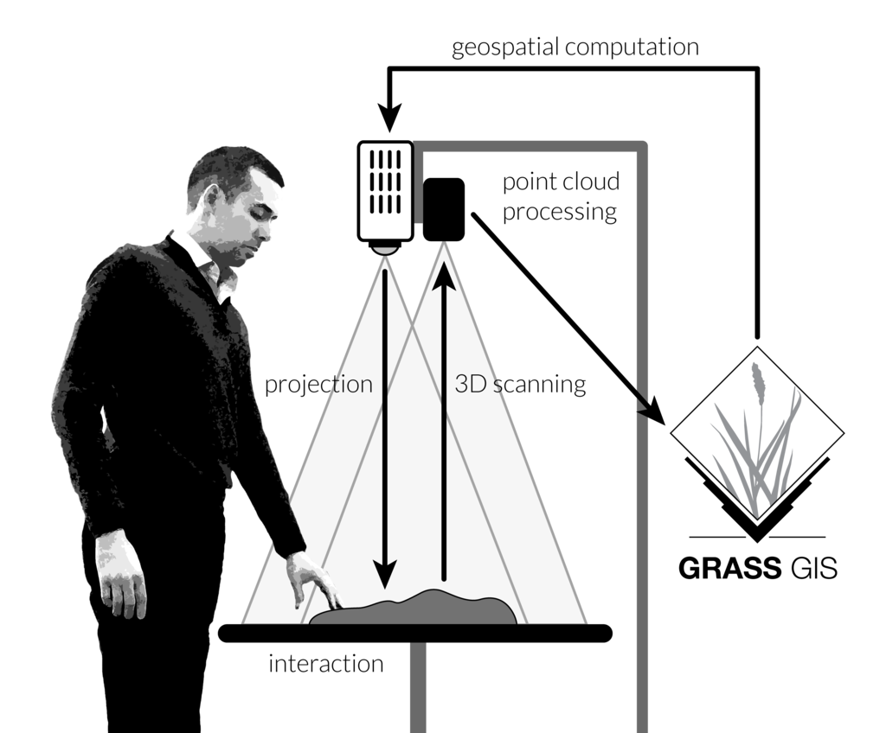
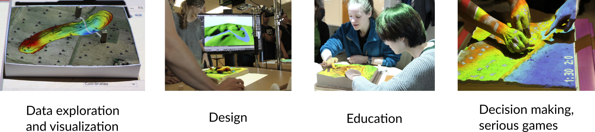
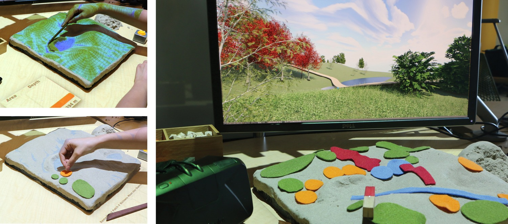
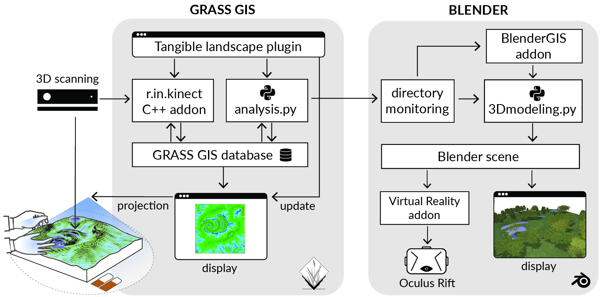

Analytics and visualization with
GRASS GIS, Blender and Tangible Landscape
Vaclav Petras, Anna Petrasova, Payam Tabrizian, Brendan Harmon, Helena Mitasova
NCSU
OSGeoREL
at
Center for Geospatial Analytics
July, 2017
Session 1: Hands-on intro to GRASS GIS and Blender
- Intro to GRASS GIS
- Visualizing landscapes with GRASS GIS
- Batch processing with GRASS GIS
- Intro to visualization of geospatial data in Blender
Session 2: Solving independent visualization tasks
- Creating animations in GRASS GIS
- Batch rendering in GRASS GIS
- Blender example: Light up the terrain with viewsheds
- Tangibly explore landscapes
GRASS GIS
GRASS GIS
- developed since 1984 as open source
- runs everywhere (from Raspberry Pie to supercomputers, 32/64bit)
- highly interoperable (Python, R, GDAL, QGIS)

GRASS GIS: functionality
- raster and 3D raster (volume) processing
- vector topological processing and network analysis
- imagery processing
- spatio-temporal data handling

GRASS GIS as geospatial development platform
- user-contributed addons in Python, C, C++
- specialized analyses in the fields of geomorphology, hydrology, landscape ecology, land change modeling, object segmentation, ...
Blender
Blender
Free and open source 3D modeling and game engine software
Easy scripting with Python
Addons for importing and publishing geospatial data
 Real-time realistic rendering and immersion at viewport
 Tangible Landscape
Tangible Landscape: real-time coupling with GIS
Tangible Landscape couples a digital and a physical model through a continuous cycle of 3D scanning, geospatial modeling, and projection.
Applications
Immersive Tangible Landscape Modeling
Real-time updating a georeferenced 3D model of the landscape based on user interaction with Tangible Landscape
Software Architecture
